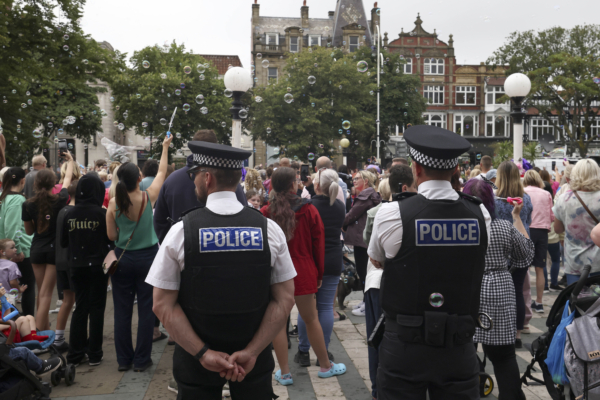

2024年8月5日，在英国利物浦南港镇，警察在市政厅外观看市民守夜活动，该活动是为纪念7月29日遭持刀袭击的受害者。英国各地城镇爆发了暴力和骚乱，表面上是为了抗议该起袭击事。（美联社/Darren Staples/加通社) 【2024年08月08日讯】（记者李平多伦多报导）周二（8月6日），加拿大政府建议，鉴于目前英国抗议持续，警方与抗议人群之间暴力冲突不断，加拿大人前往英国时应当心和谨慎。政府提醒，目前英国抗议频发，即使是和平示威也随时可能演变为暴力事件。此前示威者与警方之间的暴力冲突已导致袭击、骚乱、抢劫和破坏。抗议活动可能迅速恶化，还可能导致交通和公共交通中断。
政府建议前往英国旅游的加拿大人：避开示威、抗议和大型集会举办地区；谨慎行事；示威地区警力会加大，做好思想准备；遵守当地政府指示；关注当地媒体，随时跟踪和了解当地示威活动信息，等。
7月29日，利物浦北部海滨小镇南港镇（Southport）歹徒持刀袭人，造成3名6至9岁女孩死亡，8名儿童和2名成人受伤，愤怒的民众随后进行抗议，并与警方爆发暴力冲突。警方逮捕了一名17岁的嫌疑人。
社交媒体上传出的说法是，嫌疑人是一名寻求庇护的难民或穆斯林移民，但后来证实传言不实。袭击发生次日，人们前往事发现场献花和互相安慰，数百名抗议者用砖块、瓶子和石头袭击当地一座清真寺。
警方称，抗议者据信是英国防卫联盟（EDL）右翼组织支持者，该组织自2009年以来一直组织反穆斯林抗议活动。抗议发生后至今，已有数百名抗议者被捕。
英国政府宣称，抗议人群向警察投掷砖块和其它投掷物、抢劫商店和袭击用于安置寻求难民的酒店后，将将“受到法律的全面制裁”。
责任编辑：文芳